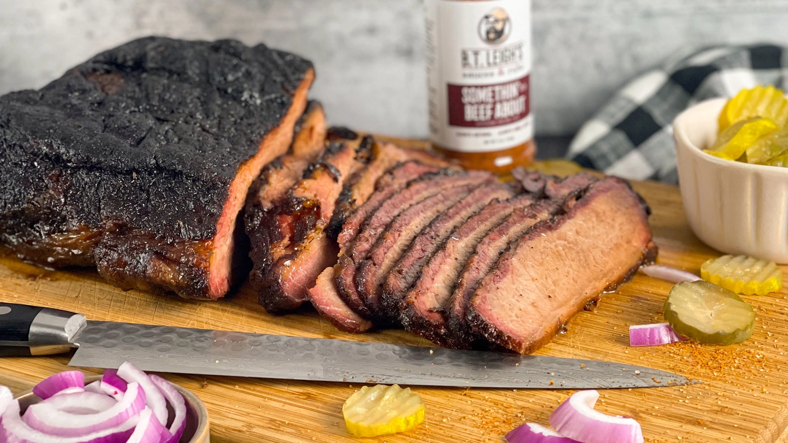

Smoked Brisket

Juicy oak smoked beef brisket
In this recipe we will be seasoning and smoking a beef brisket from scratch.
Juicy, Tender, and flavour packed would describe this brikset.
We will be smoking this brisket with a supreme blend pellets for about 12 hours
wrapping about halfway through and then after it has rested for a while we'll slice
it into hte most delicious slices of smokey goodness you have ever tried!
Ingredients
Rub
- 2 tbsp garlic powder
- 2 tbsp onion powder
- 2 tbsp paprika
- 2 tsp chile powder
- 1/3 cup kosher salt
- 1/3 cup coarse ground black pepper
Main
- 1 (12-14 lb) whole packer brisket, trimmed
- 1 cup beef tallow
- aprox. 6 ft. of butcher paper
Steps
- When ready to cook, preheat smoker to 225°F
- For the rub: Mix together garlic powder, onion powder,
paprika, chili powder, kosher salt, and black pepper in a small bowl
- Spread some of the beef tallow over the brisket as a binder
- Season the brisket on all sides with rub
- Place brisket, fat side down on grill grates. Cook brisket until
it reaches an internal temp of about 160 - 170°F or until the bark has developed
Once the brisket reaches 160-170°F remove from grill and wrap tightly
in buthcer paper and pour the beef tallow over the paper
- put the brisket back in the smoker until it reaches an internal temp of about 200°F
- Once finished remove from grill and rest for 2-3 hours slice against the grain and serve!